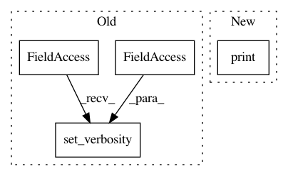

afdf2599b37a199821772f0d6eea9d9300cf9f8d,research/delf/delf/python/examples/match_images.py,,main,#Any#,50
Before Change
def main(unused_argv):
tf.compat.v1.logging.set_verbosity(tf.compat.v1.logging.INFO)
// Read features.
locations_1, _, descriptors_1, _, _ = feature_io.ReadFromFile(
cmd_args.features_1_path)
After Change
residual_threshold=20,
max_trials=1000)
print(f"Found {sum(inliers)} inliers")
// Visualize correspondences, and save to file.
_, ax = plt.subplots()
img_1 = mpimg.imread(cmd_args.image_1_path)
In pattern: SUPERPATTERN
Frequency: 3
Non-data size: 4
Instances
Project Name: tensorflow/models
Commit Name: afdf2599b37a199821772f0d6eea9d9300cf9f8d
Time: 2020-05-29
Author: bfusinska@google.com
File Name: research/delf/delf/python/examples/match_images.py
Class Name:
Method Name: main
Project Name: tensorflow/privacy
Commit Name: 10335f61775faabe5e931f30b0ecf91f0719b727
Time: 2020-05-07
Author: schien@google.com
File Name: tutorials/mnist_dpsgd_tutorial.py
Class Name:
Method Name: main
Project Name: tensorflow/models
Commit Name: afdf2599b37a199821772f0d6eea9d9300cf9f8d
Time: 2020-05-29
Author: bfusinska@google.com
File Name: research/delf/delf/python/detect_to_retrieve/extract_query_features.py
Class Name:
Method Name: main